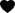
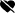

{{item.snippet.title}}
{{item.snippet.publishedAt | date: 'fullDate'}}
{{item.snippet.description}}
{{ item.statistics.viewCount }}
 {{ item.statistics.likeCount }}
 {{ item.statistics.dislikeCount }}
{{ item.statistics.commentCount }}